{kind=link}

W oknie Package Explorer znajdź klasę ProductTest. Kliknij na nią prawym klawiszem myszy i z menu kontekstowego wybierz opcję Run as -> JUnit Test. Polecenie to uruchamia zestaw testów jednostkowych. Obecnie IDE wyświetla sporo błędów - to jest oczekiwane zachowanie na tym etapie.
Każda metoda w klasie ProductTest i InvoiceTest to niezależny test sprawdzający określone przypadki działania danej części aplikacji (tzw. przypadki użycia) - tutaj sprawdzane są klasy Product i Invoice. Klasy te są tylko zaprojektowane, nie są jeszcze zaimplementowane. Ich implementacja to Twoje zadanie. Dzięki dostarczonemu zestawowi testów jednostkowych będziesz mógł upewnić się, że Twoja implementacja jest poprawna.
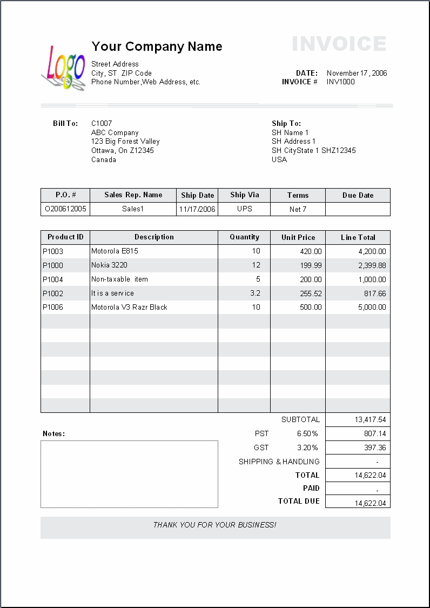
ProductTest i pierwszego testu (metody). Uruchom ten test by upewnić się, że dana funkcja nie jest jeszcze zaimplementowana (możesz uruchomić pojedynczy test klikając na nazwę metody, która go implementuje, prawym przyciskiem myszy i wybierając Run as -> JUnit Test)Product lub Invoice należy wykonać, aby dany test “przechodził” (tj. zaświecił się na zielono).Dodaj do faktury numer. Powinien on być narzucany przez system przy tworzeniu faktury.
Dodaj możliwość wyciągnięcia z faktury listy produktów w postaci ciągu znaków, w którym każda linia zawiera informacje o kolejnej pozycji na fakturze: typ, nazwa, liczba sztuk, cena. Nad listą produktów powinien znaleźć się numer faktury. Na końcu listy dodatkowa informacja: Liczba pozycji: N, gdzie N to liczba produktów na fakturze.
Jeżeli do faktury dodamy dwa razy taki sam produkt - nie powinna pojawić się na niej druga pozycja, ale liczba sztuk dodanego już wcześniej produktu powinna zostać odpowiednio zwiększona.
Dodaj do Twojego programu produkty wymagające akcyzy - klasy BottleOfWine oraz FuelCanister. Przy obliczaniu podatku w obydwu tych przypadkach należy doliczyć takżę stałą opłatę w wysokości 5.56PLN.
Co więcej, z okazji Dnia Odnawiania Znajomości rząd uchwalił ustawę znoszącą podatek na paliwa ciekłe.
Dodaj do Twojego programu produkt importowany zza granicy - klasę PremiumOysters. W przypadku dodawania takiego produktu do faktury system musi upewnić się, Służba Celna zweryfikowała i dopuściła już ten przedmiot do wypuszczenia na rynek polski. SC dostarcza implementację własnego systemy do weryfikacji z następującym API.
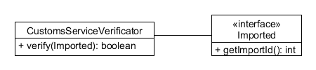
Twoim zadaniem jest takie przygotowanie implementacji PremiumOysters, by SC mogła za pomocą swojego systemu zweryfikować każdą isntancję tego produtku.
Pamiętaj, że istniejące już produkty BottleOfWine też są importowane!
Przy pracy z każdym IDE warto poznać jego przydatne funkcjonalności oraz skróty klawiaturowe, które znacząco przyspieszają pracę. Poniżej zebrano te uważane (subiektywnie) za najbardziej przydatne podczas codziennej pracy.
Zauważ, że na marginesach podczas psania kodu pojawiają się ikonki (po lewej stronie) oraz zaznaczenia odpowiedniem kolorem (po stronie prawej).
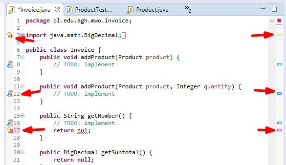
Spróbuj najechać kursorem na taką informację - dowiesz się więcej.
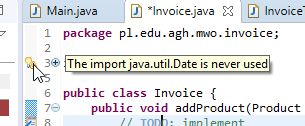
Co więcej, IDE w większości przypadków podpowiada Ci co zrobić! Wystarczy, że umieścisz kursor w problematycznym miejscu i wciśniesz Ctrl + 1. IDE naprawi kod za Ciebie.
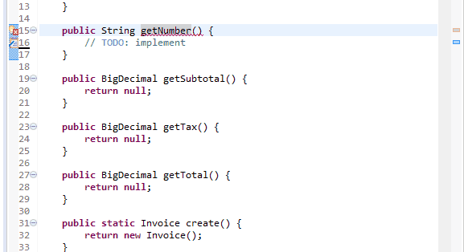
Przez swoje rozbudowane funkcjonalności czasem IDE potrafi “przytłoczyć” ilością wyświetlanych informacji. Po lewej Package explorer ze strukturą katalogu projektu, po prawej ostantio uruchomione testy, na dole… I tak dalej. A Ty chcesz się skupić w tym momencie na pisaniu kodu i niczym więcej! Jeśli tak, wciśnij Ctrl+M. Wszystkie niepotrzebne informacje znikną i nic nie będzie Cię rozpraszać.
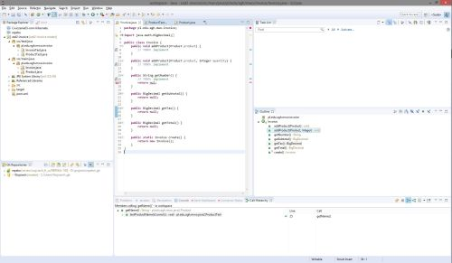
|
|
Ctrl+M
|
\|/
V
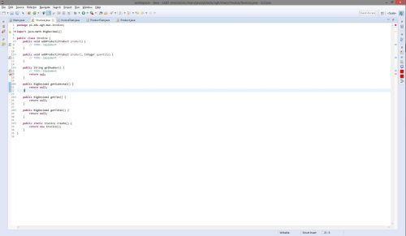
Ponowne wciśnięcie Ctrl+M pozwala przywrócić poprzedni układ (np. w celu ponownego uruchomienia testów).
Żaden problem :-) Otwórz w dowolnym momencie menu Source klikając prawym przyciskiem w obrębie kodu lub wciskając Alt+Shift+S i zobacz, co IDE może dla Ciebie napisać. Uciążliwe gettery i settery? Już nie.
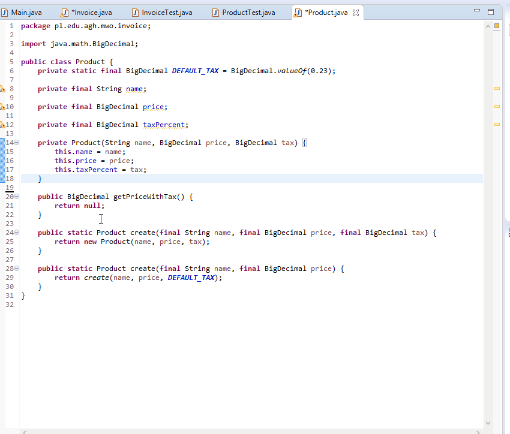
Napisałeś kod, który nie działa, ale nie chcesz go wyrzucać bo nie wiesz czy Twój następny pomysł się sprawdzi? Ctrl+/ wykomentuje linię, w której obecnie znajduje się kursor.
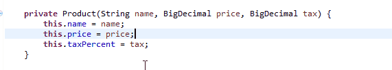
Ponowne wybranie powyższego skrótu usunie znaki wprowadzające komentarz.
Nie przyda się już? Ctrl+D!
Aby cofnąć - tak jak cofamy wszystko - Ctrl+Z.
Dzięki skrótom Alt+Strzałka w górę lub Alt+Strzałka w dół możesz przenosić linie kodu (dużo szybsze od wycinania i wklejania).
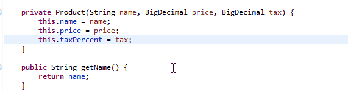
Chcesz przenieść się do innego pliku? Zostaw myszkę w spokoju! Ctrl+E wyświetli listę ostatnio otwartych plików. Zwróć uwagę, jak sprytnie można tą listę filtrować by szybko dostać się do wybranej klasy!
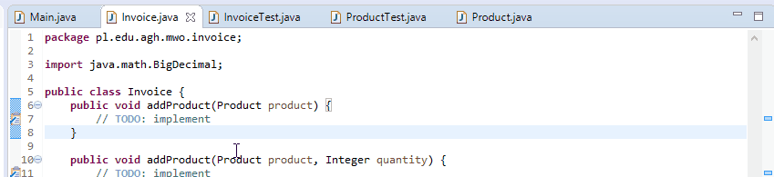
Chcesz otworzyć klasę, która jeszcze nie była przez Ciebie otwarta i nie ma jej na tej liście? Ctrl+Shift+T przeszuka cały projekt w poszukiwaniu klasy o zadanej nazwie.
Przy pracy w zespole programistycznym bardzo ważne jest by ustalić i trzymać się odpowiednich standardów formatowania kodu (formatowanie kodu, czyli gdzie mają być klamerki, gdzie i jakie odstępy itp.). IDE jest od tego, by tych standardów pilnować. Wystarczy wcisnąć Ctrl+Shift+F by let the magic happen…
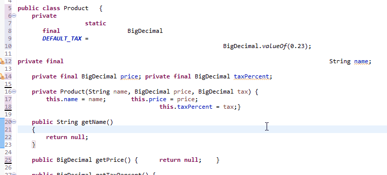
Jeśli chcesz zmienić nazwę zmiennej, metody lub klasy - możesz to zrobić w jednym miejscu i z pomocą IDE rozpropagować tą zmianę na wszystkie inne miejsca w kodzie, które danej struktury używają. Wystarczy, że użyjesz do tego celu polecenia Refactor -> Rename dostępnego po kliknięciu prawym przyciskiem myszy na wybrany element lub użyjesz skrótu Alt+Shift+R
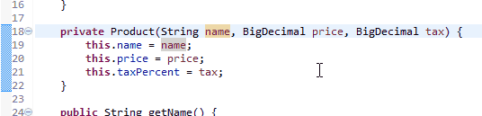